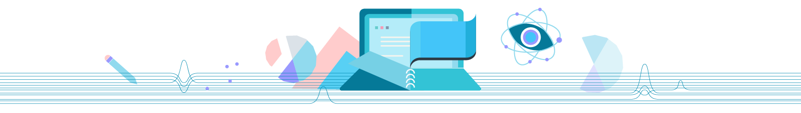

01. 概率简介
概率简介

为什么要学习概率？
统计和概率是不同但又紧密相关的数学领域。
在概率中，我们根据假定的模型或原因，对未来事件做出预测；而在统计中，我们对过去发生的事件中的数据进行分析，从而推断出这些模型或原因是什么。一个是预测数据，另一个是根据数据进行预测。
举个🌰
“概率论研究的是一个透明箱子，你知道这个箱子的构造（里面有几个红球、几个白球，也就是所谓的分布函数），然后计算下一个摸出来的球是红球的概率。
统计学面对的是一个黑匣子，你只看得到每次摸出来的是红球还是白球，然后需要猜测这个黑匣子的内部结构，例如红球和白球的比例是多少？（参数估计）能不能认为红球40%，白球60%？（假设检验）”
概率论中的许多定理与结论，如大数定理、中心极限定理等保证了统计推断的合理性。做统计推断一般都需要对那个黑箱子做各种各样的假设，这些假设都是概率模型，统计推断实际上就是在估计这些模型的参数。